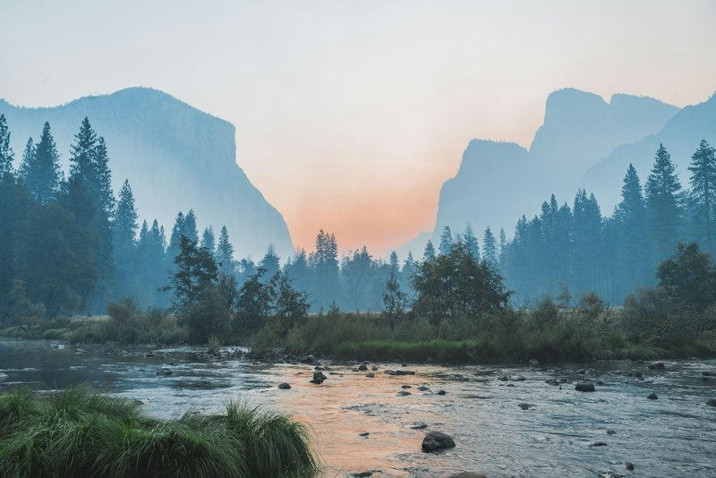

Photography & Visual Storytelling
Behind the camera lens: exploring the intersection of light, composition, architecture, and landscape storytelling that inspired my open-source Photos Album project.
The Creative Eye Behind the Code
Photography has been my primary creative outlet alongside programming. Where software development challenges analytical logic and systems thinking, photography challenges patience, observational awareness, and emotional resonance through framing and light.
My fascination with organizing, cataloging, and presenting visual media directly inspired my Photos Album open-source web application, bridging my artistic passions with modern browser engineering.

Curated Photographic Studies
A selection of recent landscape and architectural captures focusing on atmospheric geometry, reflections, and natural textures:



Techniques & Camera Philosophy
Manual Exposure
Balancing aperture, shutter speed, and ISO manually to master depth of field and capture clean highlights during the golden hour.
Leading Lines & Rule of Thirds
Using architectural columns, pathways, and horizon divisions to guide the viewer's gaze naturally through the frame.
Digital Asset Management
Standardizing raw file naming, metadata tagging, and color grading presets to maintain a unified visual portfolio.